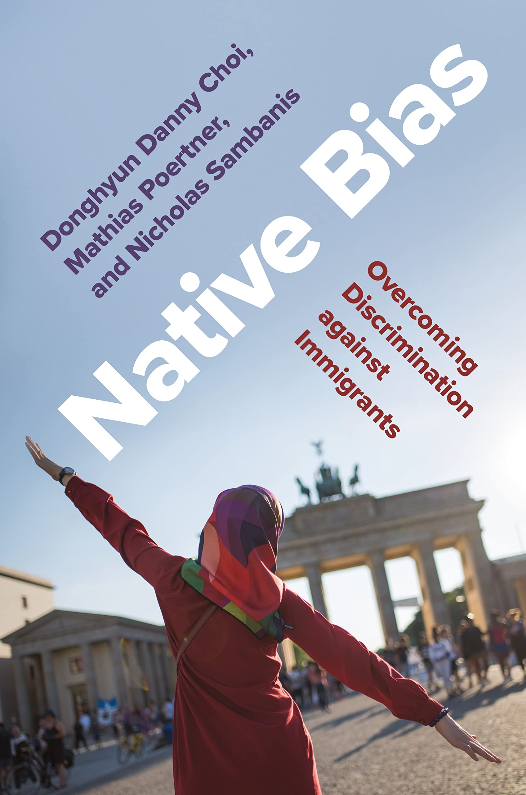

About
Welcome! I am an assistant professor of political science at Brown University. My research focuses on two broad themes: political parties and identity politics.
My first (coauthored) book, Native Bias: Overcoming Discrimination Against Immigrants, examines the extent to which common norms, identities, and ideas can reduce prejudice and discrimination against immigrants and facilitate their inclusion in democratic societies. The book was published by Princeton University Press (Princeton Studies in Political Behavior) in 2022 and won the Best Book Award from the Experimental Research Section of APSA in 2023.
My second book project, Severed Connections: Intraparty Politics and Representation in Kenya, investigates how political parties and the nature of candidate selection institutions influence the relationship between elected representatives and their constituents in new democracies. This project won APSA’s Juan Linz Prize for Best Dissertation in the Comparative Study of Democracy presented by the Democracy and Autocracy Section of APSA in 2020.
My work on these two themes have been published or are forthcoming in the Proceedings of the National Academy of Sciences, American Political Science Review, American Journal of Political Science, Journal of Politics, and Political Analysis, among others.
I received my PhD in Political Science from UC Berkeley in 2018. Prior to joining Brown, I was an assistant professor of political science at the University of Pittsburgh and a pre/postdoctoral fellow at the Identity & Conflict Lab at the University of Pennsylvania.
Book Projects
Summary
In the aftermath of the refugee crisis caused by conflicts in the Middle East and an increase in migration to Europe, European nations have witnessed a surge in discrimination targeted at immigrant minorities. To quell these conflicts, some governments have resorted to the adoption of coercive assimilation polices aimed at erasing differences between natives and immigrants. Are these policies the best method for reducing hostilities? Native Bias challenges the premise of such regulations by making the case for a civic integration model, based on shared social ideas defining the concept and practice of citizenship.
Drawing from original surveys, survey experiments, and novel field experiments, Donghyun Danny Choi, Mathias Poertner, and Nicholas Sambanis show that although prejudice against immigrants is often driven by differences in traits such as appearance and religious practice, the suppression of such differences does not constitute the only path to integration. Instead, the authors demonstrate that similarities in ideas and value systems can serve as the foundation for a common identity, based on a shared concept of citizenship, overcoming the perceived social distance between native and immigrants.
Addressing one of the most pressing challenges of our time, Native Bias offers an original framework for understanding anti-immigrant discrimination and the processes through which it can be overcome.
Endorsements
"Native Bias offers a compelling and hopeful analysis of the challenges facing countries grappling with increasing cultural diversity. Focusing on the integration of Muslims in Germany, a series of clever experiments reveals what it takes for majorities to stop discriminating against minorities. Indispensable reading for anyone interested in immigrant integration and multicultural politics!"— Rafaela M. Dancygier, author of Dilemmas of Inclusion: Muslims in European Politics
"This excellent book addresses one of the most important issues of our time: how to overcome the discrimination of immigrants and, ultimately, how to secure their successful integration into new societies. This is a major contribution not only to the study of immigrant discrimination and integration, but also to intergroup relations more broadly."― Peter Thisted Dinesen, University of Copenhagen
"Setting a new standard for theoretically guided fieldwork, Native Bias presents an array of elegant experiments staged in dozens of cities and involving thousands of bystanders. These unobtrusive studies of discrimination do more than simply document the fact that natives look down on immigrants; they illuminate the conditions under which anti-immigrant discrimination diminishes, underscoring in particular the importance of challenging stereotypes that portray immigrants as hostile or indifferent to the values of the native majority."— Donald P. Green, Columbia University
"This is a terrific book―one of the best I’ve read in a long time. Polished, theoretically sophisticated, and logically structured, it brings to bear new evidence and approaches on a critical contemporary topic."― Daniel N. Posner, University of California, Los Angeles
"Based on an impressive battery of original field experiments and surveys, this work holds a powerful message: bias and discrimination against Muslim immigrants are widespread and persistent in Europe. Native Bias shows that these shortcomings can be overcome by shared civic norms and identities."― Christian Joppke, University of Bern
Summary
How does intraparty politics shape the quality of representation in new democracies? This question has seldom been addressed in existing work on political parties in the developing world, which has traditionally emphasized the weakness of the party system and partisan attachments, as well as mobilization strategies based on ascriptive loyalties or clientelistic relationships as the key barriers to representation. My first book project studies this important question by reorienting our focus to the interaction between elected representatives and their party leadership, whose support is critical for their electoral survival. I show that the party leadership is motivated to capture the candidate selection process to cultivate the ideal slate of representatives that allows them to simultaneously pursue their party's electoral success while diffusing threats against their position within the party's ranks. The party leadership's machinations, combined with an electoral geography that often amplifies the centrality of candidate selection, culminate in the emergence of two disparate pools of elected representatives; a majority mostly disinterested in being responsive to their constituents, and a smaller minority who remain steadfast in their commitment to their democratic sovereigns. Drawing on 18 months of fieldwork in Kenya, my project combines insights from in-depth interviews of more than 80 past and current elected representatives and senior party officials, analyses of original surveys, census data, election returns, archival materials, ethnographic observation within party organizations, a series of experiments conducted on more than 3000 primary voters in Kenya, and a text analysis of a corpus of 51000 newspaper articles.
My argument begins from a simple premise: that to understand the relationship between intraparty politics and representation is to understand what types of demands are placed on elected representatives, and by whom. In addition to demands voters place for constituency service, representatives face pressures from their respective political parties. Moving beyond the simplistic assumption that parties are singularly motivated by the need to win elections, however, I posit that the party leadership --- a select group of individuals including the party leader herself who control the party organization --- is also motivated by the need to preserve and maintain their power over the party hierarchy. The need to manage and balance these two divergent goals underpins the logic by which the party leadership engineers the ideal "roster" of individuals that are nominated as party candidates; privileging "loyalists" at the expense of constituency-oriented "performers" in constituencies where the electoral repercussions of such a strategy is minimal and privileging "performers" in places where electoral success of the party hinges on nominating popular candidates with a proven track record of constituency service. The strategies deployed by the party leadership in turn structure the incentives of representatives to invest effort in serving their constituents, ultimately shaping the quality of representation.
Substantively, these findings contribute to the emerging consensus that democratic elections are necessary but insufficient to foster better representation and responsiveness for the people. However, while the dominant narrative in comparative politics has focused on structural-institutional factors such as ethnicity, clientelism, or electoral systems to understand this deficit, I shift the attention back to political parties. My project shows that the ideal of representative democracy is likely to remain elusive unless democracy within political parties is realized. When power and authority over party institutions and decision-making processes accumulate to a single individual or a small group of elites, these actors have the potential to effectively become autocrats within their domain; manipulating elected representatives who should primarily be interested in tending to their constituents to serve their political ambitions, thereby derailing the democratic process that they should protect.
Publications
- with Mathias Poertner and Nicholas Sambanis
- American Journal of Political Science. 2023. 67(2), 291-306. [pdf] [appendix] [dataverse]
- Gregory Luebbert Prize for Best Article in Comparative Politics, APSA, 2022
- Best Paper Award, European Politics and Society Section, APSA, 2021
- Press Coverage: [Süddeutsche Zeitung]
- with Mathias Poertner and Nicholas Sambanis
- Political Science Research and Methods. 2023. 11, 198-206. [pdf] [appendix] [dataverse]
- with Leo Arriola and Matthew Gichohi
- Journal of Politics. 2022. 84(4), 2107–2122. [pdf] [appendix] [dataverse]
- with Sumitra Badrinathan, Sabrina Karim, Eunji Kim, and Yang-Yang Zhou
- PS: Political Science & Politics. 2022. 55(4), 754-758. [pdf]
- with Andy Harris and Fiona Shen-Bayh
- American Political Science Review. 2022. 116(3), 1067-1080. [pdf] [appendix][dataverse]
- Fiona McGillivray Award for Best Paper, Political Economy Section, APSA, 2020
- with Leo Arriola, Justine Davis, Melanie Phillips, Lise Rakner
- Party Politics. 2022. 28(3), 507-520. [pdf] [appendix]
- with Mathias Poertner and Nicholas Sambanis
- Journal of Experimental Political Science. 2021. 8(3), 235-246.[pdf] [appendix] [dataverse]
- Rebecca Morton Award for best article published in JEPS, Experimental Research Section, APSA, 2022
- with Mathias Poertner and Nicholas Sambanis
- Proceedings of the National Academy of Sciences. 2019. 116(33), 16274-16279. [pdf] [appendix] [video]
- Press Coverage: [LA Times] [Der Spiegel] [Inverse] [San Diego Tribune]
- with Christopher Krogslund and Mathias Poertner
- Political Analysis. 2015. 23(1), 21-41. [pdf]
Work in Progress
[abstract]
In response to mounting popular and international pressure, parties in new democracies have increasingly allowed for mass participation in the candidate selection process. While these democratizing reforms should result in the diminishing influence of party elites and the ascendancy of mass preferences over the selection of party candidates, few studies have examined whether this is the case. I investigate this question in Kenya, where major incumbent and opposition parties have adopted primary elections to select their candidates for legislative office. Drawing on insights from qualitative interviews with elected officials, original data on primary elections, as well as a survey and embedded experiment of primary voters, I show that contrary to expectations, parties wield significant influence over the outcome of primaries and that primary voters can be persuaded to select the party's favored candidate over other higher quality aspirants. These findings have implications for our understanding of the relationship between internal party democracy and democratic accountability in the developing world.
[abstract]
When do women policymakers support liberalizing access to legal abortion? While early scholarship on substantive representation showed that women in politics often sought to expand reproductive rights, more recent research indicates that their policy preferences are also shaped by other social identities. We argue that wealth, in particular, will affect women politicians’ support for liberalizing abortion reform when their personal resources determine the extent to which they are constrained by existing laws. We corroborate this expectation through an analysis of a survey and embedded experiment conducted among more than 600 political candidates in Zambia. We show that women candidates with less wealth increase their support for liberalization once exposed to the human cost of abortion restrictions. We show that this effect is conditioned by wealth rather than marital status or education. Our findings underscore how economic inequalities can influence the substantive representation offered by women politicians.
- with Leo Arriola, Justine Davis, Melanie Phillips, Lise Rakner
[abstract]
Overcoming America's deep partisan polarization poses a unique challenge: Americans must be able to disagree on policy while nonetheless agreeing on more fundamental democratic principles. We study one model of depolarization--reciprocal group reflection--inspired by marital counseling and implemented by a non-governmental organization,''Braver Angels.'' We randomly assigned undergraduate students at four universities either to participate in a Braver Angels workshop or simply to complete three rounds of surveys. The workshops significantly reduced polarization according to explicit and implicit measures. They also increased participants' willingness to donate to programs aimed at depolarizing political conversations. These effects are consistent across partisan groups, though some dissipate over time. Using qualitative data collected during the workshops, we inductively generate a new theory of depolarization that combines both informational and emotional components such that citizens, moved to empathize with an outgroup, become more likely to internalize new information about outgroup members.
- with Hannah Baron, Robert A. Blair, Laura Gamboa, Jessica Gottlieb, Amanda L. Robinson, Steven C. Rosenzweig, Meghan M. Turnbull, Emily A. West [draft] [policy brief]
[abstract]
Are cross-cleavage campaigns effective in polarized societies? While social demographics and electoral rules in many countries compel candidates to pursue votes outside their own identity groups, the efficacy of such campaigns remains unclear in polarized contexts. We argue that cross-cleavage electoral outreach through in-person campaign rallies can inadvertently trigger inter-group differentiation and competition, resulting in the heightened salience of identity and depressed voter support for outgroup candidates. We assess these claims by exploiting the timing of an unscheduled campaign rally held by an outgroup presidential candidate in another ethnic group's stronghold during Kenya's 2017 election. Comparing survey respondents before and after the rally, we find that the outgroup candidate's post-rally favorability significantly decreased among ingroup voters, while the proportion of voters identifying in ethnic terms simultaneously increased. These findings contribute to a more nuanced understanding of the challenges faced in democratic elections in socially divided societies.
- with Leo Arriola, Matthew Gichohi, and Ken Opalo [draft]
[abstract]
We examine how the expansion of mobile internet infrastructure affects national identity in sub-Saharan Africa. In diverse societies where elections are contested along ethno-communal lines, we argue that access to mobile internet undermines national identity because it facilitates voter exposure to the polarizing tendencies of internet-based social media and communication platforms. Applying a difference-in-differences design on mobile coverage maps and geocoded survey data of more than 50,000 African citizens, we show that access to mobile internet reduces identification with the nation by up to 5-7 percentage points. To establish support for our electoral mechanism, we exploit as-if random variation in the timing of individuals' survey interviews relative to presidential elections, during which we argue divisive and polarizing forces are at their peak. Our analysis shows that electoral proximity intensifies the negative effect of mobile internet. These findings highlight how technological innovations can inhibit the process of state-building in diverse societies.
- with Benjamin Laughlin and Anna Schultz [draft]
[abstract]
How does democratic backsliding affect the behavior of incumbent party and opposition legislators in parliament? We investigate this question in the context of Zambia, which experienced a significant spate of oppression against the opposition party during the Presidency of Edgar Lungu. Using computational text analysis on a corpus of 1,292 parliamentary sessions from 2001—2021, we systematically analyze how legislative debates between incumbent and opposition players evolved during a period of democratic turmoil compared to periods of relative democratic stability. We specifically examine changes in the composition of legislators who speak up during these debates, the topics raised, as well as the extent of incivility across party lines. Our findings reveal how democratic backsliding manifests in the legislative arena, which has implications for freedom of speech and democratic discourse.
- with Fiona Shen-Bayh
[abstract]
Although LGBT+ individuals in some countries around the world are enjoying the gradual expansion of civil liberties and fundamental protections, in many other countries they are experiencing increasing government repression and social sanctions. In this context, it remains unclear to what extent popular attitudes are conditioned by the decisions of state institutions like courts or the social campaigns of civil society organizations -- in either conservative or liberal directions. We assess such dynamics through a three-wave panel survey conducted among a nationally representative sample of Kenyans throughout 2019. Respondents were asked about their attitudes toward LGBT+ individuals, including criminal penalties and social sanctions, before and after Kenya's High Court issued a decision upholding the country's colonial-era anti-sodomy law. Respondents were also randomly exposed to informational and empathy treatments modeled after those employed by LGBT+ rights organizations in Kenya. Our analysis shows that while the information and empathy treatments about LGBT+ individuals did have some sizable short-term effects consistent with prejudice reduction, the effects did not persist beyond the single survey round. Furthermore, results from the post-court decision survey round show that even when respondents were nudged to recall the experience of the information and perspective-taking treatments, they were no less likely to exhibit prejudicial attitudes towards LGBT+ individuals. Taken together, our findings provide evidence for how social campaigns and state institutions may constrain the effectiveness of prejudice-reducing interventions.
- with Leo Arriola, Matthew Gichohi, Siri Gloppen, and Malcolm Langford
[abstract]
Although women have entered government in African countries at an unprecedented rate over the past three decades, it remains unknown to what extent they have acquired the influence necessary to shape policymaking. Are women able to exercise personal influence to the same degree or in the same ways as their male counterparts? We argue that women tend to be less influential than men due to the structure of their personal networks with other politicians. Prior scholarship on African politics has demonstrated that political outcomes depend on the personal ties that connect politicians to one other. Based on a novel network survey among Zambian candidates, we demonstrate that women tend to be peripherally situated within networks. We find that women are systematically less likely to be connected to others in social or work networks among politicians. We also demonstrate that, while having fewer connections than men, women have connections with more important people in both social and work networks.
- with Leo Arriola, Justine Davis, Melanie Phillips, and Lise Rakner
[abstract]
Political decentralization in African countries has the potential to transform the relationship between citizens and their representatives. But scholars have yet to fully understand whether or how voters adapt to the accountability demands imposed by having to elect representatives at multiple levels of government. Do voter assessments of local politicians depend on coethnicity, as prior studies have shown with national politicians? Are voters willing to update their assessments of incumbent performance based on new information? To answer such questions, we examine how voter evaluations of local incumbents are conditioned by information and partisanship. An experimental survey design presented respondents in two Kenyan counties, Uasin Gishu and Trans Nzoia, with randomized positive versus negative information about the performance of incumbent county governors in the run-up to the 2017 elections. The results show that some voters are willing to update their vote preference based on positive information about incumbent performance. However, these effects are found almost exclusively in Trans Nzoia, where exposure to positive information significantly increases the likelihood of voting for the incumbent even among non-coethnics, non-copartisans, and respondents with prior negative evaluations of the incumbent. In Uasin Gishu, by contrast, we find no such effects. We postulate that the differences between the two counties may be driven by distinct patterns in the distribution of political support for the two incumbents.
- with Leo Arriola, Matthew Gichohi, and Ken Opalo
Teaching
| Institution | Class Name | Level | Offered | Syllabus |
|---|---|---|---|---|
| Brown | Contemporary African Politics | UG | S2023 | [S2023] |
| Brown | Introduction to Comparative Politics | UG | S2023 | [S2023] |
| Brown | Identity Politics in Global Perspective | UG | F2022 | [F2022] |
| Pittsburgh | Dissertation Overview | G | F2020, S2021 | [F2020] |
| Pittsburgh | Identity Politics Seminar | G | F2020 | [F2020] |
| Pittsburgh | Capstone: Democratic Erosion | UG | S2020 | [S2020] |
| Pittsburgh | Coding and Computational Social Science | UG | S2020 | [S2020] |
| Pittsburgh | Introduction to African Politics | UG | F2019, S2021 | [S2021] |